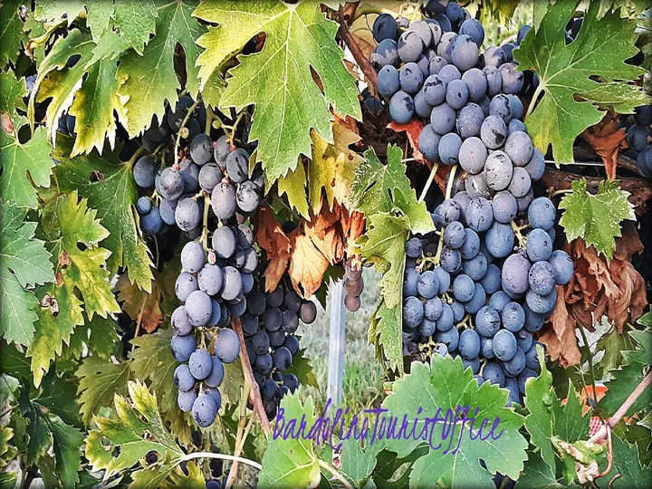

da ven 25 set a mar 6 ott
La Cura dell'uva a Bardolino
L'uva presenta diverse proprietà benefiche in grado di depurare l'organismo garantendo tutte le sostanze nutritive di cui necessita il nostro corpo. L'uva contrasta l'acidità dell'organismo e, così facendo, lo depura poco a poco, perché le tossine in un terreno basico si…
 Indicazioni
Indicazioni
- Costi e prenotazioni
- Costo non indicato · Prenotazione non indicata
- Programma
- Programma da verificare. Apri la fonte ufficiale per orari e possibili aggiornamenti.
- In caso di maltempo
- Nessuna indicazione specifica pubblicata.
- Note
- Acquisito automaticamente dalla fonte.
L’EVENTO
Descrizione completa
L'uva presenta diverse proprietà benefiche in grado di depurare l'organismo garantendo tutte le sostanze nutritive di cui necessita il nostro corpo. L'uva contrasta l'acidità dell'organismo e, così facendo, lo depura poco a poco, perché le tossine in un terreno basico si dissolvono.
Questa cura è raccomandata fin dall'antichità e, in certe epoche della nostra storia, anche dal corpo medico europeo, perché fa davvero "miracoli". L'uva è uno dei frutti più antichi che si conoscano. Se ne trovano tracce nell'era terziaria, nella mitologia greco-romana (Bacco), in Asia Minore, presso i Galli e poi sulla mensa di Luigi XIV. L'uva è uno dei frutti più energetici. La sua ricchezza di vitamine del gruppo B contribuisce alla digestione di numerosi glucidi. I suoi pigmenti proteggono i vasi sanguigni. I polifenoli regolano il colesterolo. Agisce sulla prevenzione dei coaguli e delle patologie cardiovascolari. Ricca di potassio, presenta un forte potere drenante.
Settembre e ottobre sono i mesi dell'uva e della vendemmia e Bardolino li omaggia con la " Cura dell'Uva " all'interno della grande botte in Piazza Catullo.
Tutti i giorni dalle 10.00 alle 13.00 e dalle 16.00 alle 19.00 sarà disponibile in degustazione il succo d'uva con le sue proprietà antiossidanti.
Durante la festa dell'Uva e del Vino, dal 3 al 7 ottobre lo stand sarà aperto dalle ore 11.00 alle ore 23.00.
IL PROGRAMMA
Programma e orari
Appuntamenti raccolti dalle fonti elencate. Dove manca un orario, non è ancora disponibile in questa scheda.
Programma pubblicato
- 2026-09-25 — 2026-10-06 · 10:00:00
INFORMAZIONI UTILI
Prima di partire
- Controllare la fonte prima di partire.
ORGANIZZAZIONE